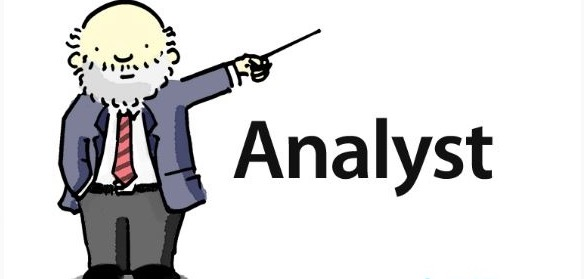

5. 与用户代理合作

对于一个项目来说，客户团队里包括一个或多个真实用户是极其重要的。虽然其他人可以猜想用户如何使用软件，但事实上往往还在于实际用户。
遗憾的是，我们很难有机会与实际用户一起工作。
例如，我们在开发一个广泛通用的产品，用户遍及全国各地，但我们没法也不适宜把一个（或多个）用户带到现场，与我们一起编写故事。或者我们正在开发一个给公司内部用的软件，但被告知我们不能与用户一起讨论。
我们期望与尽可能多的用户接触，这些用户代表了产品的不同角度，当我们无法接触到他们时，我们就需要求助于用户代理(user proxy)，他们自己可能不是用户，但他们在项目里代表着用户。
选择合适的用户代理对于用户的成功至关重要。我们要考虑潜在用户代理的背景和动机。
有营销背景的用户代理识别故事的方法，不同于由领域专家担当的用户代理。重要的是要认识到这些差异。
接下来，我们会探讨有时会代替实际用户、不同类型的用户代理。
5.1. 用户的经理
在开发一个供内部使用的项目是，组织可能不愿意让你完全不受限制的接触一个或多个用户，却可能让你接触用户的经理。
如果用户的经理不是软件的实际用户，这其实就是偷梁换柱。即使用户的经理的确是软件的用户，但是他使用软件的模式肯定也与典型用户不同。
例如：
在一个呼叫中心的应用程序项目中，开发团队获准接触呼叫中心的轮班主管。 虽然轮班主管确实在使用这个软件，但他们在新版本中想要的功能主要集中于管理呼叫队列和在坐席之间的呼叫转移上。
这些功能对于轮班主管手下的人来说，重要性却很低，但这些人才是该软件的主要用户。如果开发人员不能接触更多典型的用户，他们就会过分关注轮班主管需要的功能，但这些功能很少使用。
有些时候，用户的经理会从中干预，并且出于自负，想在项目中充当用户的角色。他可能承认自己不是典型用户，但他固执己见，认为自己比用户更知道他们需要什么。
在这种情况下，务必小心，不要得罪用户的经理，但是为了项目的成功，在部分围绕他的同事，也要想办法接触终端用户。针对这种情况，我们会在后续的“5.10 与用户代理合作时，做些什么？”专门聊聊如何来处理。
5分钟不等于1分钟
我们下面用一个故事来说明一下，有时候用户的经理是错误信息的来源。
有个内部项目的“用户”是副总裁，他从来没用过这个软件。在他和终端用户之间，还隔着经理层。
在为下一个迭代的故事安排优先级是，他希望开发人员专注于提高数据库查询的速度。开发团队也注意到了这个高优先级的故事，但他们有些困惑。
他们知道应用程序的性能十分重要，所以已经在软件里建立了一个监测的机制：每次执行数据库查询时，它的运行参数、执行查询花的视觉以及用户的名字都会保存在数据库里。每天至少会监测一次这种信息，没有迹象表明性能问题。可是，他们的“用户”仍旧告诉他们，有些查询需要花“多达5分钟”的时间。
在与副总裁会晤之后，开发小组研究了一下查询的历史记录。他们发现：有两个用户执行的查询操作只花了一分钟就完成了。这虽然比所期待的时间要长，但考虑到他们查询的数据、数据库的大小以及执行这种类型的查询操作并不频繁，这种性能是符合预期的。
但是用户已经将这件事情汇报给他们的经理了。之后经理有汇报给副总裁；可是为了让副总裁注意到这个问题，经理却故意说查询花了2分钟时间。然后副总裁又将这个问题反馈给开发人员，为了让开发人员足够重视这个问题，他将这个问题说成了花了“多达5分钟”的时间。
所以，只要有可能，就要通过与实际用户交流来求证我们从用户的经理那儿获得的信息。
5.2 开发经理

让开发经理担任客户代表，是最坏的选择之一，除非你们开发的软件就是给开发经理使用的。
尽管开发经理可能没什么不好的，但他们最想获得是荣誉，他们的目标很可能是互相冲突的。例如：
开发经理排列故事的优先级会不同于实际用户排列的，因为这样可以让提早给别人介绍令人兴奋的新技术。
此外，开发经理的目标可能与企业目标不一致：或许他的年终奖跟项目结束日期有关系，这有可能导致他希望提前完成项目。
最后，大部分的开发经理对正在开发的软件没有像用户那样的亲身经历，而且他们也不是领域专家。
如果以后的用户代理是开发经理，而他恰恰有拥有领域知识，最好把他视为领域专家。
判断是否有合格的用户代理前，请阅读“5.4 领域专家”部分。
5.3 销售人员
让销售人员从当用户代理是危险的，这会让大家对正在开发的产品没有一个全面的蓝图。
对于销售人员来说，最重要的故事是哪些如果没有实现就会导致他“丢单”的故事。
如果故事因为产品没有“撤销”(undo)功能而让他失去一位客户，完全可以打赌，他会马上把故事“撤销”的卡片调整到顶部。
虽然基于丢单具体原因的重要程度，编写一两个新故事也是值得的。但是，如果一家产品研发公司过分关注每一笔丢失的订单，他们可能会失去战略方向，产品的长期远景就会停滞不前了。
5.4 领域专家
领域专家，有时也称为主题专家，是非常重要的资源。他们对软件应用领域的了解程度对软件的成败有直接影响。
有些领域相对其他领域更难理解。
我之前给医生和护士写过软件，虽然有时候软件会很复杂，但我通常明白客户的真正需求。后来，我参与过为统计遗传学家开发软件。在这个领域里，充满了诸如表型(
phenotype)、重组率（centiorgan）和单体率(haplotype)这些我以前闻所未闻的词汇，因此该领域变得更加难以把握。
这使每个开发人员需要更多的依赖领域专家，让他们帮助我们了解我们正在开发的软件。
尽管领域专家是很好的资源，但他们是否对你有帮助，取决于他们是否目前或曾经使用过你们正在开发的这种软件。
例如，开发一个工资系统时，毫无疑问你想要一位注册会计师(
CPA,Certified Public Accountant)来做领域专家。但是，由于未来的用户可能是薪资办理员，而不是注册会计师，很可能你会在薪资办理员那里才能了解到更好的故事。
在建立领域模型、确定业务规则是，领域专家是理想的资源，但是最好从实际用户哪里了解工作流以及使用方面的问题。
让领域专家来担任用户代理的另一潜在的问题是，最终开发出的软件可能仅仅针对那些与领域专家有类似水平的用户。
领域专家会倾向将项目指向适合他们自己的解决方案上进行，但这往往过于复杂，对目标用户群体而言明显是错误的。
5.5 市场营销团队

Larry Constantine和Lucy Lockwood在1999年指出，了解市场的是营销团队，而不是用户。这会导致营销团队或者有营销背景的人会更关注产品特性的数量，而轻视特性的质量。
在很多情况下，营销团队可以为相关故事的优先级提供更高层次的指导意见，但他们往往不具备很好的洞察力，无法提供故事的具体细节。
在一个公司里，由市场营销团队担当用户代表，他们将用一个新的产品来替换公司现有的纸质产品。这个公司的销售记录非常成功，他们销售的纸质书包含了医院和保险公司之间商定的规则：如果医院遵循了那些规则，他们就可以向保险公司报销。
例如：“若（以及其他条件）病人的白细胞数量高于一定的界限时，医院才能做阑尾炎切除手术。”
市场营销团队没有兴趣通过与用户交谈来了解他们想让软件做什么。相反，他们辩解说他们确切知道用户的需求，开发团队可以在他们的指导下进行开发工作。
营销团队选择了将软件做成纸书的电子版。他们并没有利用软件先天的灵活性，而只是满足于将软件当成一本“自动化的书籍”。
很显然，用户对软件很失望。
很不幸，如果他们让实际用户而不是营销团队来担任用户代理，那么公司很早就可能已经发现这个问题了。
5.6 以前的用户

如果以前的用户会在不久前还是用过你们的软件，那么由他来担任用户代理是非常好的。但是和其他用户代理一样，应该谨慎考虑他的目标和动机是否与实际用户的完全一致。
5.7 客户
客户是哪些做出购买决定的人，他们不一定是软件的用户。
考虑客户的期望是很重要的，因为开支票买软件的人是他们，而不是用户（当然，除非你的用户和客户是同一批人）。
企业的桌面办公软件是一个可以充分说明客户与用户区别的例子。企业的IT人员可以决定公司所有的员工使用哪一款字处理程序。
这个例子中，IT人员是客户，公司所有员工是用户（包括IT人员，他们即是客户，也是用户）。对于像这样的产品，其功能一定要够用，用户才不会大声抱怨；但这些功能也一定要能够吸引客户，使其决定购买。
例如，对于大部分桌面办公软件的用户而言，安全特性通常不是很重要。然而，对于那些做出购买决定的IT（客户）而言，安全性却极为重要。
我曾经和一个项目团队一起工作，他们设计过一个数据密集型应用程序。该程序的数据是从客户现有的其他系统载入的。开人人员需要定义一个文件格式，用于交换数据。
在这个案例中，客户是公司的首席信息官（
CIO)； 这个功能的用户是他公司的IT人员，他们需要编写数据抽取程序，将现有系统的数据转换成新系统指定的格式。在问对文件格式有什么偏好是，客户（这位CIO）决定使用
XML，对于他来说比非标准的逗号分隔文件（CSV）更有吸引力。交付软件时，用户（IT人员）完全不赞成--他们喜欢更简单、易于生成的CSV文件。
如果开发人员从用户那儿直接获取故事，那么他们早就可以知道这一点了，也不会浪费时间在XML格式上了。
5.8 培训师和技术支持
培训师
由培训师和技术支持人员来充当用户代理看似合乎逻辑的选择。他们整天和实际用户交谈，所有他们一定知道用户的需求。
不幸的是，如果用培训师充当用户代理，你的系统最终只能成为一个容易培训的系统。
技术支持
类似的，如果你让技术支持来充当用户代理，那么你的系统最终只是使得支持工作变得较为容易。
例如，某个做技术支持的人可能会把高级功能的优先级排的较低，因为他预计会增加支持工作的工作量。
把易于培训和良好的可支持性作为目标时，他们做优先级排列时很可能与真实用户不同。
5.9 业务分析师或系统分析师

许多业务和系统分析师是很好的用户代理，因为他们即懂得技术，又熟悉软件相关的领域知识。能平衡好这些背景且努力跟实际用户沟通的分析师，通常会是非常出色的用户代理。
有些分析师暴露出来的问题是，他们遇到问题喜欢空想，而不是去做调查。我曾经与太多分析师一起工作，他们相信自己可以坐在办公室里凭直觉就知道用户的视觉需求，而不是与用户交谈。
必须注意，项目的分析师应该同用户讨论，他不能只根据自己的观点来决定。
让分析师担任用户代理时，第二个问题是偶尔会有分析师喜欢在项目前期花太多时间。
在两个小时的角色建模和故事编写坊足以填满未来四个月的发布计划时，有些分析师却喜欢在这些活动上花3周时间。
5.10 与用户代理合作时，做些什么？
虽然不太理想，但不和实际用户一起而和用户代理一起，还是可能开发出优秀软件的。在这种情况下，还是有很多方法可以用来促进成功。
能访问到用户但访问受限时
访问实际用户受阻且团队被告知要和用户代理一起工作，由用户代理来做出项目相关的所有决定时，团队就要和他们合作，但同时也要与用户简历便捷的联系。
最好的方法之一是请求准许启动一个用户顾问团队（user task force）。用户顾问团队可以由数量不限的实际用户组成，从几个到几十个人都可以。
顾问团队能够提出意见和建议，而用户代理依然是项目最终的决策者。
大多数情况下，用户代理会同意那么做，特别是因为这让他有一个防护网从而避免做出错误决定的时候。
一旦建立起用户顾问团队，并且配置实际用户。它就可以指导每天越来越多的关于项目的决策。可以开一系列的会议来讨论软件的一小部分，然后让顾问团队来识别、编写并且排列用户故事。
实在不能接触到用户时
当实在不能接触到用户是，必须求助于用户代理，一种有价值的方法是使用多个用户代理。
这有助于减少一种可能性，即开发的系统仅仅准确的满足一个人的需求。使用多个用户代理时，要确保利用不同类型的用户代理。
例如，将一个领域专家和有市场背景的人组合，而不是使用两个领域专家。
为此，要么指定两个用户代理，或者只指定一位用户代理，但鼓励他依靠其他非正式的用户代理。
如果正在开发和其他商业产品竞争的软件，可以使用竞争者的产品作为一些故事的来源。
不过，我们要引入竞争者的产品作为故事来源，需要考虑下面的问题：
- 在软件评测里提到了同类产品的哪些功能？
- 在线新闻组里讨论过哪些功能？
- 这些功能成为讨论的焦点是否由于其使用起来过于复杂？
- ......
尽早发布产品
另一个可用的方法就是尽早发布产品。
技师发布被称为雏形版本或早期测试版本，及早将软件交付到用户手里，有助于辨别出用户代理与实际用户之间想法的不一致。
更妙的是，一旦软件交付到一个或多个早期用户手里，你就打开了一条与用户沟通的途径，并且可以利用它与用户讨论后续的功能。
5.11 可以自己来吗？
当你无法找到或者访问到实际用户时，要避免思维陷入误区：你知道用户的想法，所以不需要或可以忽略你的用户代理。
虽然每种类型的用户代理对比实际用户都有一些缺点，但大部分开发人员冒充实际用户时，有更多缺点。
总的来说，开发人员没有市场背景，他们不懂软件功能的相对价值，他们不像销售人员那样频繁接触客户，他们不是领域专家等等。
5.12 建立客户团队
首先，要记住，在任何时候，实际用户总是优于用户代理。只要可能，就要邀请实际用户加入客户团队。
然而，当实际用户不能加入客户团队是，就需要有一个或多个用户代理。应该将客户团队建成一个优势互补的团队，一位成员的优势能平衡另一位成员的弱势。
建立客户团队有三步。
-
第一，邀请真实用户加入。如果有不同类型的用户使用软件，试着邀请每种类型的用户。例如，在一个健康应用程序中，我们的用户是护士。在我们客户团队中，有常规的护士、肿瘤专家、糖尿病专家等。
-
第二，在客户团队中确定一位“项目负责人”(
project champion)或“一把手”(first among equals)。在商业软件公司里，这个人通常是产品经理，但也可以是其他人。这个项目负责人负责协调客户团队的协作。客户团队的所有成员，应尽力做到传递一致性的信息。尽管可能有多个客户，但对于开发项目来说，必须只能由一个客户声音。 -
第三，确定项目成功必须的关键因素。这点随着项目的不同而不同。例如，如果项目是现有产品的下一代版本，那么成功的关键之一是如何让现有用户轻松的转移到新系统上。将具有相关知识、技能和经验的用户代理补充到客户团队中，是项目成功的关键因素。在将现有用户转移到新系统的例子里，这可能意味着要在客户团队中加入一位培训师。
5.13 职责
客户团队职责
- 如果你不是软件的用户，则要负责了解自己属于哪类用户代理。
- 负责理解自己会将哪些偏见导入到项目中，如何克服这个问题，无论是依靠别人还是其他方法。
开发人员职责
- 负责帮助组织机构为项目物色合适的客户。
- 负责了解不同类型的用户代理怎么考虑你们正在开发的系统，他们的背景如何影响交互。
5.14 小结
- 我们了解了不同类型的用户代理，讨论了编写用户故事时，为什么用户代理不如实际用户理想。
- 除非用户的经理也是用户，否则他就不是合适的用户代理。
- 开发经理会试图担任用户代理，因为他们已经参与到项目每天的细节中。然而，开发经理大多数不是正在开发的软件的客户，所以他们不是理想的用户代理。
- 在产品公司里，客户经常来自市场团队。来自市场团队的人通常是不错的用户代理，但他们通常关注于软件的功能数目，而不是其质量，这点必须克服。
- 在很多不同的客户（而这些客户同时也是用户）联系的销售人员可以是很好的开发项目客户。销售人员必须避免把重点放在那些可以重新赢得已失去订单的故事上。在所有的情况下，销售人员是与用户沟通的有效渠道。
- 领域专家可以成为优秀的客户代表，但必须避免一点：在为用户编写故事时，将产品开发成只适合那些与他们有相同水平的人使用。
- 客户，那些做出购买决定的人，如果他们能与用户密切的交流，那么他们能成为非常好的用户代理。显然，如果客户自己也是用户，那就是完美的组合。
- 为了成为好的用户代理，培训师和技术支持人员必须避免仅仅关注产品中那些他们每天关心的方面。
- 我们简短的给出一些与用户代理一起工作的方法，包括用户顾问团队的使用，使用多个用户代理，分析竞争产品，尽早发布产品来获取用户反馈。